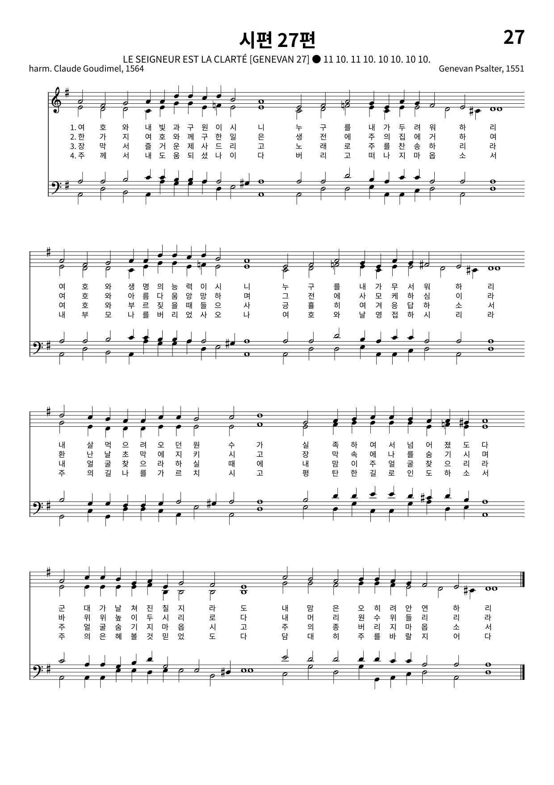

Psalm 27
LE SEIGNEUR EST LA CLARTÉ [GENEVAN 27] · 11 10. 11 10. 10 10. 10 10.
English title: God Is My Light, My Refuge, My Salvation
Tune: Genevan Psalter, 1551 · Harmony: Claude Goudimel, 1564 · Lyrics: Korean adaptation of Psalm 27 from the Korean Revised Version (AI draft adaptation · not yet theologically reviewed) · 4 stanzas
Score PDF MusicXML (for printing) MusicXML (for accompaniment, with prelude and repeats) Read Psalm 27 (Korean Revised Version)
Score
← Psalm 26 ListAccompaniment (in preparation)Psalm 28 →
Lyrics (Korean)
Stanza 1
여호와 내 빛과 구원이시니
누구를 내가 두려워하리
여호와 생명의 능력이시니
누구를 내가 무서워하리
내 살 먹으려 오던 원수가
실족하여서 넘어졌도다
군대가 날 쳐 진 칠지라도
내 맘은 오히려 안연하리
여호와 내 빛과 구원이시니
누구를 내가 두려워하리
여호와 생명의 능력이시니
누구를 내가 무서워하리
내 살 먹으려 오던 원수가
실족하여서 넘어졌도다
군대가 날 쳐 진 칠지라도
내 맘은 오히려 안연하리
Stanza 2
한 가지 여호와께 구한 일은
생전에 주의 집에 거하여
여호와 아름다움 앙망하며
그 전에 사모케 하심이라
환난 날 초막에 지키시고
장막 속에 나를 숨기시며
바위 위 높이 두시리로다
내 머리 원수 위 들리리라
한 가지 여호와께 구한 일은
생전에 주의 집에 거하여
여호와 아름다움 앙망하며
그 전에 사모케 하심이라
환난 날 초막에 지키시고
장막 속에 나를 숨기시며
바위 위 높이 두시리로다
내 머리 원수 위 들리리라
Stanza 3
장막서 즐거운 제사 드리고
노래로 주를 찬송하리라
여호와 부르짖을 때 들으사
긍휼히 여겨 응답하소서
내 얼굴 찾으라 하실 때에
내 맘이 주 얼굴 찾으리라
주 얼굴 숨기지 마옵시고
주의 종 버리지 마옵소서
장막서 즐거운 제사 드리고
노래로 주를 찬송하리라
여호와 부르짖을 때 들으사
긍휼히 여겨 응답하소서
내 얼굴 찾으라 하실 때에
내 맘이 주 얼굴 찾으리라
주 얼굴 숨기지 마옵시고
주의 종 버리지 마옵소서
Stanza 4
주께서 내 도움 되셨나이다
버리고 떠나지 마옵소서
내 부모 나를 버리었사오나
여호와 날 영접하시리라
주의 길 나를 가르치시고
평탄한 길로 인도하소서
주의 은혜 볼 것 믿었도다
담대히 주를 바랄지어다
주께서 내 도움 되셨나이다
버리고 떠나지 마옵소서
내 부모 나를 버리었사오나
여호와 날 영접하시리라
주의 길 나를 가르치시고
평탄한 길로 인도하소서
주의 은혜 볼 것 믿었도다
담대히 주를 바랄지어다